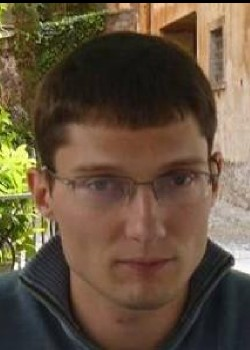
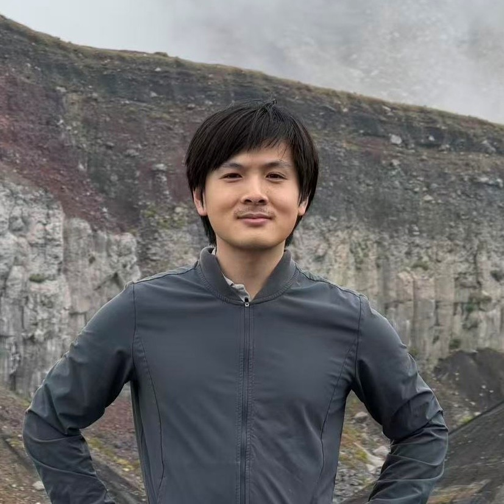

About MURI-TASKS
Tensor Approaches for Simulating Kinetic Systems (TASKS) center is a DoD MURI (Multidisciplinary University Research Initiative) program managed by Air Force Office of Scientific Research (AFOSR) office.
Our Faculty Team
Jingmei Qiu is a Unidel Professor of Mathematical Sciences at the University of Delaware. Her research lies in numerical analysis and scientific computing, with a focus on the design, analysis, and application of high-order structure-preserving computational algorithms for complex systems with multiscale, multiphysics, and high-dimensional features. She has worked extensively on high-order numerical methods for fluid, kinetic, and multiscale models. More recently, her research interests have expanded to adaptive-rank tensor network approximations for high-dimensional multiscale nonlinear kinetic systems. Her methodologies have been applied to problems in astronomy, physics, and engineering.

Andrew Christlieb currently serves as the Director of the Center for Hierarchical and Robust Modeling of Non-Equilibrium Transport (CHaRMNET), one of four Department of Energy Mathematical Multifaceted Integrated Capability Centers. In 2001, he received his PhD in Mathematics from the University of Wisconsin. After completing two post-docs at the University of Michigan (one in aerospace and one in mathematics), in 2006 he began his career at Michigan State University. In 2007, He was recognized by the Young Investigator Program (YIP) of the Air Force Office Of Scientific Research. From 2007-2011 he was an Intergovernmental Personnel Act (IPA) with Kirtland Air Force Base. His core research interests are scalable implicit algorithms, high-order structure/asymptotic preserving methods for both kinetic and fluid models, fast integral equations methods, particle methods, blended computing paradigms, and structure-preserving machine learning. His group has been recognized by the National Science Foundation, Air Force Office of Scientific Research, Office of Navel Research, and the Department of Energy for their work on high order methods and novel approaches to multi-scale problems in plasma and material science. Dr. Christlieb has graduated 22 PhD students and mentored 17 post-docs who have gone on to positions in industry, universities and the national labs. He is currently a University Foundation Professor of Mathematics at Michigan State University and from 2015-2021, Dr. Christlieb served as the founding chair of the Department of Computational Mathematics, Science and Engineering at Michigan State University.
Jingwei Hu is the Olga Jung Wan Endowed Professor in the Department of Applied Mathematics at the University of Washington, Seattle, where she also holds an adjunct appointment in the William E. Boeing Department of Aeronautics & Astronautics. She received her Ph.D. from the University of Wisconsin-Madison in 2011 and was a postdoctoral fellow at the University of Texas at Austin from 2011 to 2014. Prior to joining UW in 2021, she was an assistant and later associate professor at Purdue University. Her research interests lie broadly in numerical analysis and scientific computing, with a particular focus on the development and analysis of efficient, structure-preserving numerical methods for high-dimensional multiscale kinetic equations arising in plasma physics, rarefied gas dynamics, and related applications in science and engineering.

Edgar Solomonik is an Associate Professor in the Siebel School of Computing and Data Science at the University of Illinois Urbana-Champaign, where he leads research in parallel numerical algorithms, tensor computations, and high-performance scientific computing. His work develops scalable algorithms and software for numerical linear algebra, tensor decompositions, communication-avoiding methods, and quantum simulation. Within the TASKS MURI, his expertise contributes to the development of efficient low-rank tensor and tensor-network algorithms for high-dimensional kinetic models. His research emphasizes algorithms that reduce computational and communication costs while preserving the mathematical structure needed for accurate large-scale simulation.
Lexing Ying is Professor of Mathematics at Stanford University. He is also a member of Stanford’s Institute for Computational and Mathematical Engineering. His research focuses on scientific computing, numerical analysis, and the design of fast algorithms for problems arising in applied mathematics, physics, and data science. He has made contributions to areas including fast solvers, multiscale methods, wave propagation, electronic structure computation, and quantum algorithms.
Program Coordinator

Yanrui Ma serves as the program coordinator at Michigan State Unviersity, supporting multiple large-scale federal funded research centers and programs, including the DoE funded MMICC center "Hierarchical and Robust Modeling of Non-Equilibrium Transport (CHaRMNET)", the AROSR funded MURI center "Tensor Approaches for Simulating Kinetic Systems", the NSF funded NRT program "Harnessing the data revolution (HDR) to enable predictive multi-scale modeling across STEM (AIDMM-NRT@MSU)" and the PSAAP-FIC center "High Order Plasma Turbulence Modeling for Z-Pinch (HighZ)". She earned her PhD in Polymer Material Science from the University of Akron in 2014 and an MBA degree from the Unviersity of Tennessee in 2017.
PostDoc
Maryam Dehghan is a Postdoctoral Researcher in the Siebel School of Computing and Data Science at the University of Illinois Urbana-Champaign. Her research interests lie at the intersection of linear and multilinear algebra, tensor computations, and scientific computing, with a focus on developing efficient low-rank tensor algorithms for high-dimensional kinetic models.

Xun Tang graduates from Stanford ICME in 2025 under Lexing Ying, and is currently a postdoc in Stanford math department, advised under Lexing Ying.
Graduate Students
Zhanrui Zhang is a Ph.D. student in Computer Science at the University of Illinois at Urbana-Champaign. Zhanrui’s research lies in scientific computing and numerical linear algebra, with a focus on tensor computations and scalable algorithms. He is particularly interested in developing efficient low-rank methods for high-dimensional kinetic PDEs.